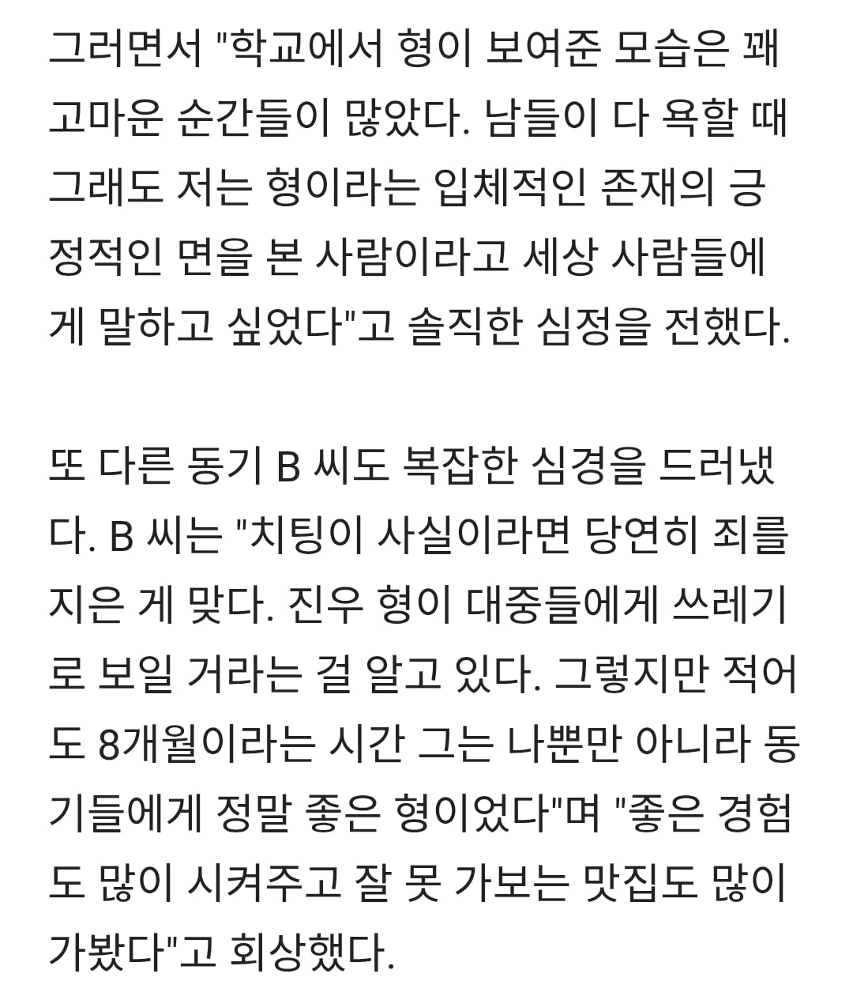
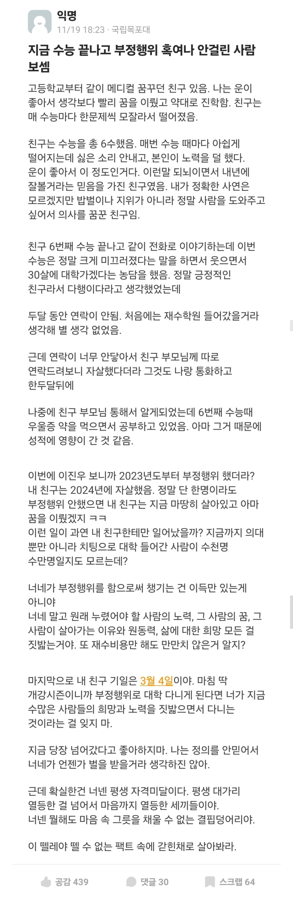

나이어린 치대 동기동생들에게 좋은경험도 많이 시켜주고 맛난것도 많이 사준 좋은 형
그걸 회상하는 치대 동기들

ㅎㅎ

나이어린 치대 동기동생들에게 좋은경험도 많이 시켜주고 맛난것도 많이 사준 좋은 형
그걸 회상하는 치대 동기들

ㅎㅎ
개인적으로 하는 애도와 저런 공개적인 글 쓰면서 안타까워 하는건 완전히 다른건데
막말로 피해자 앞에서 저런 소리 하다간 돌맞아도 무죄임
그래서 앞에선 안했잖슴
? 왜
좋은 경험이 좋긴 하지
좋은데 데리고 가줬나 보네
ㅋㅋㅋㅋ
시외버스 뒷자리가 명당임
좋은 의사와 달리, 의룡인은 저렇게 배양되는 거구나
인터뷰한 동기라는 새끼들은 어려서그런지 사리분별도 안되나보네
자리가 사람을 만든다고 팔자피고 형노릇좀 했나보네
사람은 원래 이중적인 존재니깐, 동기들한테 정말 좋은 사람이었을 수 있지.
굳이 재단할 필요없이 좋은 기억 있으면 가서 조문하고 애도하면 됨.
그렇다고 대중이, 그리고 피해자가 아무리 죽었다 한들 비난을 안 할 수가 있겠나.
진우를 쉴드치는건 아닌데 진우 옆에 있던 치대 동기들은 당황하는게 당연하지 않냐?
학교에서 만나면 잘 대해주고 사람좋아보이던 형이고
지금 이슈 뜨기 전까지 반년 이상 잘 지내던 사람이라면 사실이 까발려졌을 때 속은 느낌도 들거고 진짜 내가 아는 이사람 맞나? 부터 여러가지 복합적인 느낌이 들건데 당황해도 전혀 이상하지 않음

갓대학들어간 20-21살짜리들이 뭘알겠어 밥사주고 술사주면 좋은형이지
그
아니다
밥 사주고 재학기간동안 특별히 문제가 없엇다면 동기들에겐 좋은 사람이 맞지
범죄자도 누군가에겐 좋은 사람으로 기억될수잇어 완벽한 타인들이 그 기억까지 부정하는건 아닌거같음
동탁도 편들어주는 사람 있었음
동탁이 뭔지 모른다고? 늙크크가 아니라서 그래..
아 동탁 아시는구나!
치팅행위를 한 나쁜놈이면서 지인들에겐 좋은 형이었다는 사실은 공존할 수 있음
총기난사범도 효심이 깊은 사람일 순 있잖아
이게 바로 확증편향 아니냐 치팅종자라고 그 인간의 모든 인격이 다 개판인건 아니잖아 인간의 얼굴이 얼마나 많은데
이게 무협이지
근데 왜 자살을 해...
저새끼때문에 설치대 들어왔어야할 사람 한명이 나가리 됐다는 생각은 못하네
(버스에서…이하생략)